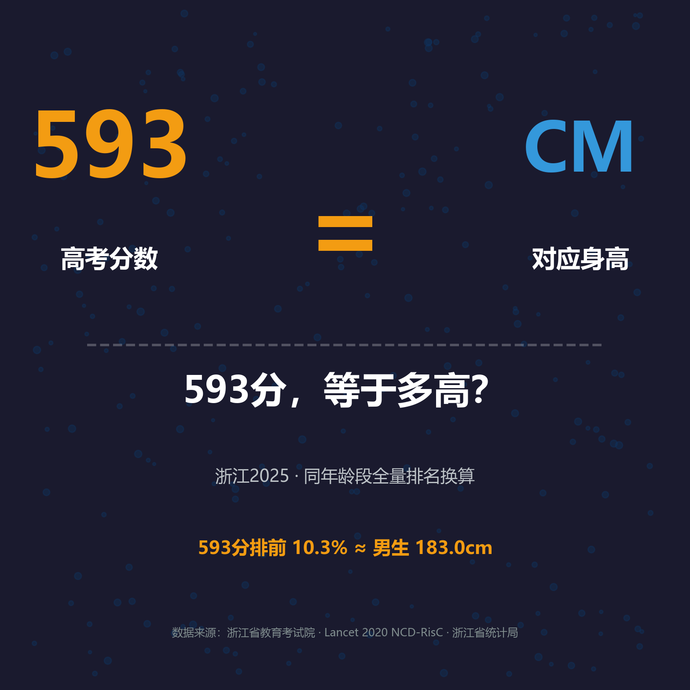
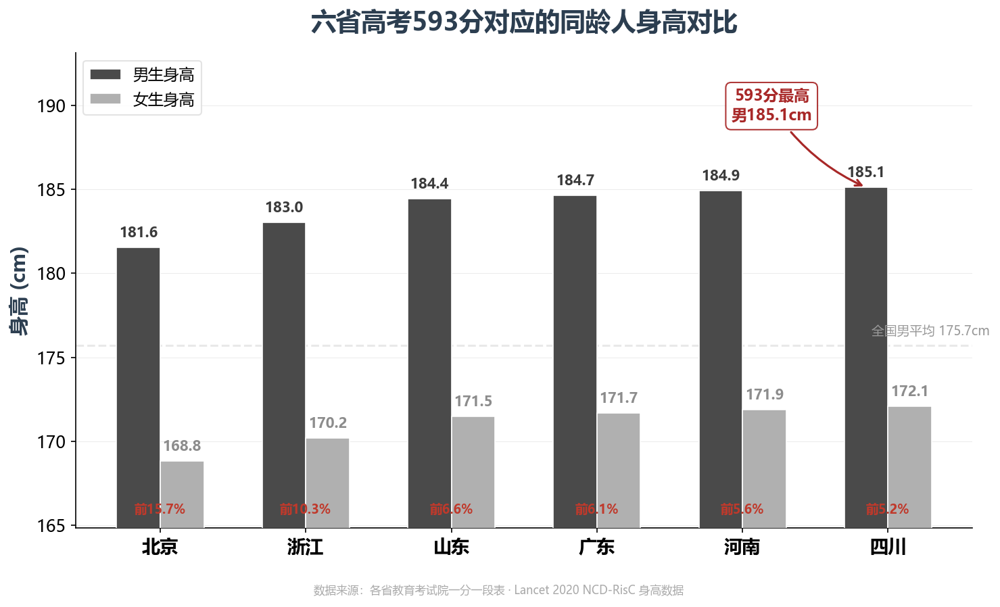
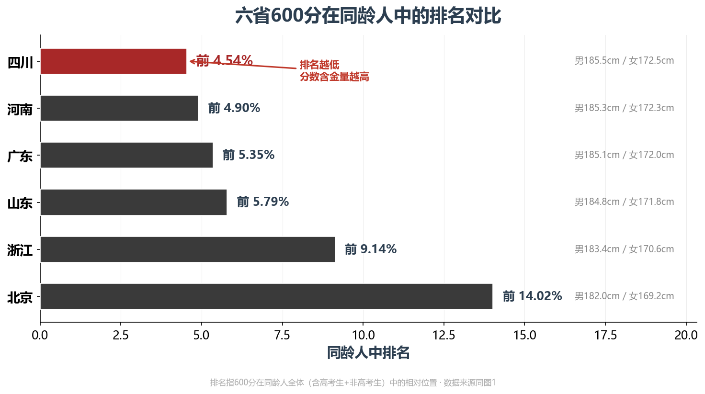
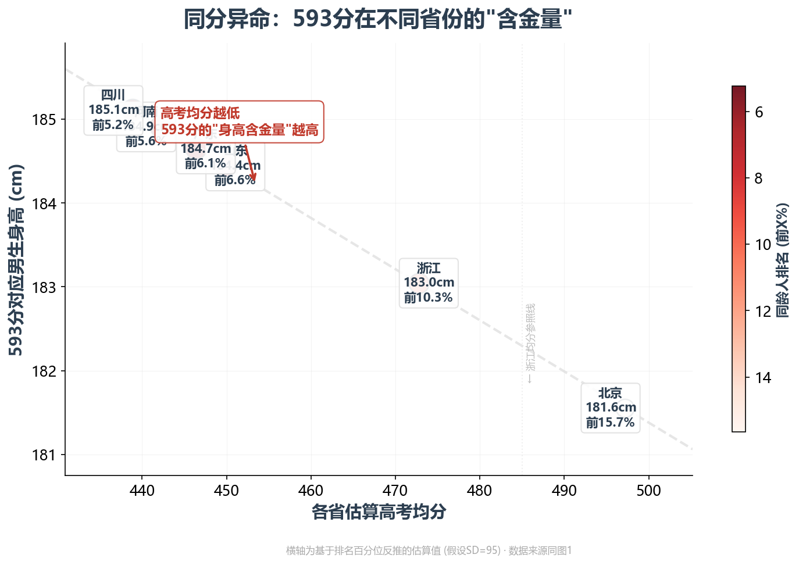

用身高单位重新理解分数：选省份、年份、科目，输入你的分数

600 分 = 183.4 cm（男生）/ 170.6 cm（女生）
在浙江约 53 万同龄人中排前 9.1%。但换个省考，你是 185.5cm。
600分。在很多省份这是个分水岭——211稳了，985有望。
但如果我告诉你，同样的600分在不同省份对应的身高差了3.5公分——你会怎么想？

全国身高最高省份，男生平均176.4cm。600分排进前5.8%——高基础+高排名，双料冠军。185.9cm在山东街头也是鹤立鸡群。
136万考生，同龄人前4.9%。河南男生平均173.4cm，排全国中下。但600分硬生生把排名拉到前5%——纯粹考出来的183cm，地狱模式的勋章。
北京男生平均176.3cm，全国第二。600分排名虽只有前14%，但架不住底子好——站在176cm的起跑线上，轻松到183cm。不靠卷，靠基础。
基准线。40.2万考生，同龄人前9.1%。浙江男生平均173.8cm——前9%的排名把身高拉到182cm。不顶天，但足够体面。
83万考生，高考均分450，600分高出150分——排名冲进前4.5%，六省最高。但四川男生平均仅171.5cm。超高的排名被偏矮的基础身高拖了后腿。在成都是个体面身高，放到山东就普通了。
76万考生，前5.4%。广东男生平均172.3cm——基数偏低，600分拉上来的幅度有限。181.5cm在广东街头已经是"一眼就能看到"的存在。


600分=多高，取决于两件事：你在全省的排名，以及你省的平均身高。山东靠"高基础+高排名"登顶，河南靠"纯排名"逆袭，四川排名最高却被身高拖了后腿。每个省有自己的算法。
方法叫「百分位等值法」：你分数在全省同龄人中的排名百分位 = 你身高在同龄人中的排名百分位。分母不是只算考生，而是全省所有同龄人。
数据：各省教育考试院2025年一分一段表 + Lancet 2020 19岁身高数据。
「还行吧，大概就是 185 的感觉。」
数据来源：各省教育考试院（2025年一分一段表）· 各省统计局 · Lancet 2020 NCD-RisC